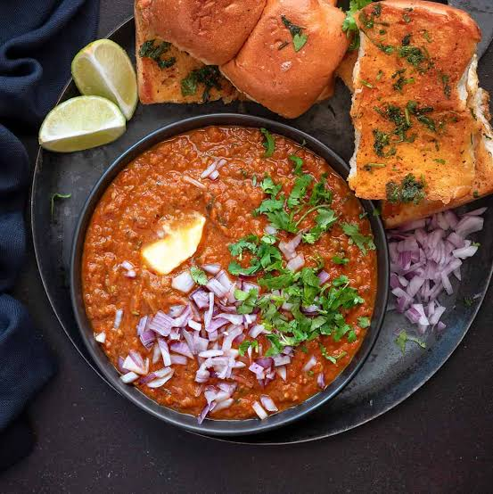

Pav Bhaji
Recipe
Ingredients:
2 carrots cubed
1 large potato peeled,cubed
2 capsicums( red+ green) chopped
1 sweet potato peeled,cubed
1 small beetroot peeled,cubed
2 cup cauliflower/broccoli florets
2 cup cabbage
2 medium onions finely chopped
4 tomatoes chopped
½ cup peas
2-3 tablespoon oil/butter
Spices:
3 tsp. ginger/garlic/chilli paste
1 tsp. turmeric
1 tsp. red chilli powder
2 tsp. coriander powder
2-3 tsp. pav bhaji masala
Salt as per taste
Coriander,lemon,butter for garnish
Instructions:
Chop all vegetables for the pav bhaji. Boil hard vegetables potatoes, carrots and beetroots for 15 mins with 3-4 cups of water and salt
Now, add broccoli and capsicums and let it come to a boil.
Add chopped cabbage to it. Cover and cook on slow flame until all vegetables are soft.
Mash the boiled veggies it using a blender or potato masher,keep it aside.
Heat oil/butter in a pan, add onions,ginger,garlic and chilli,saute until onions are golden brown.
Add the tomatoes with spices, let it cook for few minutes.
Add chopped tomato onion mix along with peas,to the boiled mash. Let it simmer for 15 mins.
Garnish with coriander,lemon and butter.
Toast buns on a pan for best results and spread some butter on it.Serve pav with yummy bhaji